Decision Trees are a useful prediction tool. They are used as classification algorithms, strategy analyzers, and operations research.
They are visualized as flow charts made up of nodes and splits. A key realization is that decision trees require labeled data as these are the
classifiers with which it can use to identify patterns and make partitions. Without labels, a decision tree has no value like all other supervised
machine learning methods.
When it comes to the tree itself, all data points start in the root node and then are split.
The goal of a decision tree is to make subsequent nodes "pure" through a series of "decisions" (subsetting groups into smaller groups)
based on a parameter of a variable within the data that leads to the most "pure" node. A pure node is one where all the data points belong
to the same class. Node purity measures like gini and entropy are essential to understanding decision
trees as the splits are guided by parameters related to these measures and the notion of information gain.
The gini impurity measure is simple; it measures the probability of a randomly selected data point in a given node being wrongly classified
if classified according to the data's distribution. The min value of gini is 0 (when the node is pure) and the max value of
gini is .5 (for a 2 class problem). The better
the split the lower the gini value. It is calculated using this formula:
Entropy measures the amount of disorder of the data within a given node. If the node is pure, entropy will be 0, and a maximally disorganized node will have entropy of 1 (for a 2 class problem). Similar to gini, the lower the entropy the better the split. Entropy is calculated using this formula:
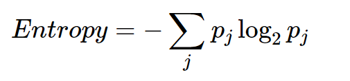Information gain compares entropy of the parent node to the weighted average of the entropies of the child nodes. The parent node is the node that is split into the two or more child nodes. Information gain can be used to determine the optimal split, with a higher information gain indicating a superior split.
To perform decision tree analysis, the data must be split into train and test sets. The train sets are what is used to form the decision tree. The train set not only includes the data but also the label, the idea being that the vectors of the data are associated with a given label. These associations are what is used along with gini or entropy calculations to determine which are the key variables and how the data should be split. Once this process is complete, the created decision tree is fed the testset (vectors of data without the label) and each vector is assigned a particular class by running through the tree and looking at the most common class in the terminal node in which it resides. These predictions can then be compared against the actual labels using a confusion matrix to test for accuracy.
Formatting the text data into something usable for decision trees was an interesting task. The goal of the text data analysis throughout the project has been to use twitter to find out what it means, in a cultural sense, to be a star, with the hopes of using that information to augment the salary analysis. To that end, decision trees to predict sentiment, although interesting, is not that helpful for the aim of this project, Rather, what has proved to be more insightful is identifying words associated with particular characteristics of stardom. As a result, for the decision tree analysis, the goal was to identify words that are unique identifiers for the different types of stardom in the nba based on the 5 searches performed (star, allstar, legend, superstar, mvp) and the 3 clusters revealed during Clustering Analysis. The three clusters were 1) star 2) MVP and 3) allstar, legend, and superstar. Decision trees require labels and a document term matrix to be analyzable by computers. Thus, the approach was to pull a balanced subset of the text data (1000 tweets from each label), treat each tweet as its own unique vector, and run the decision tree to try and classify a tweet into its class solely using the words in that tweet (minus the search terms).
The text data used was created when formatting the data for ARM where each tweet was its own row. The cleaning process had already been performed so this data was ready to use right away. To format it appropriately for decision tree analysis, Document Term Matrixes were created for each search (each csv file) with individual tweets as the rows. The search terms were added as labels (legend was used as the label for the cluster including legend, superstar, and allstar) for the DTM using the process below: (code linked here.)
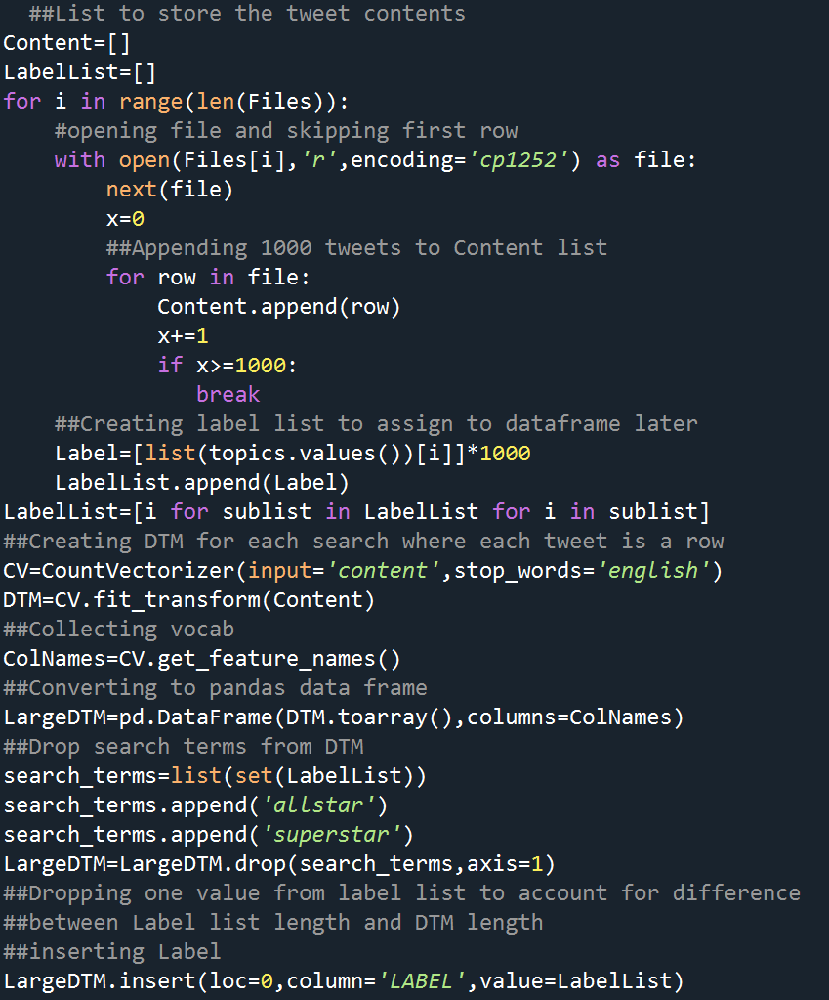The large DTM is now ready for Decision Tree Analysis. A quick look at the DTM with 3000 rows and 6122 words is below:
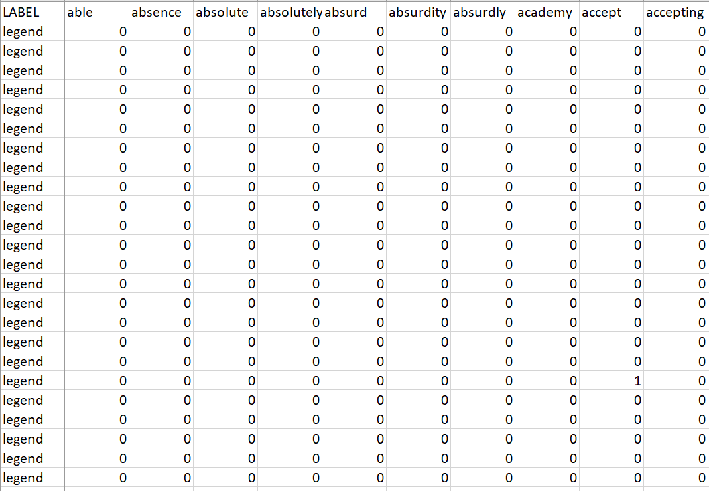Building decision trees in python makes use of the sklearn library, and specifically the Decision Tree Classifier class. A 75/25 split was used to create the train and test sets. Below are bar graphs of the label breakdowns of the train and test set which are balanced:
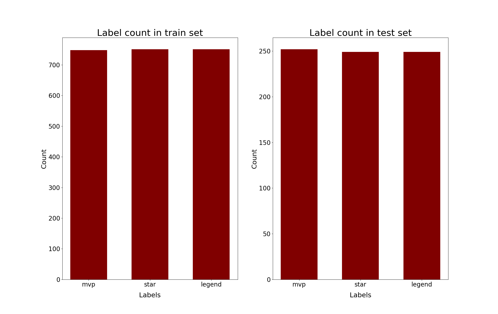Prior to the Decision Tree analysis, the most popular words in each label could give us a hint as to what to expect. A wordcloud is made for each search (made of 1000 tweets each in this case).
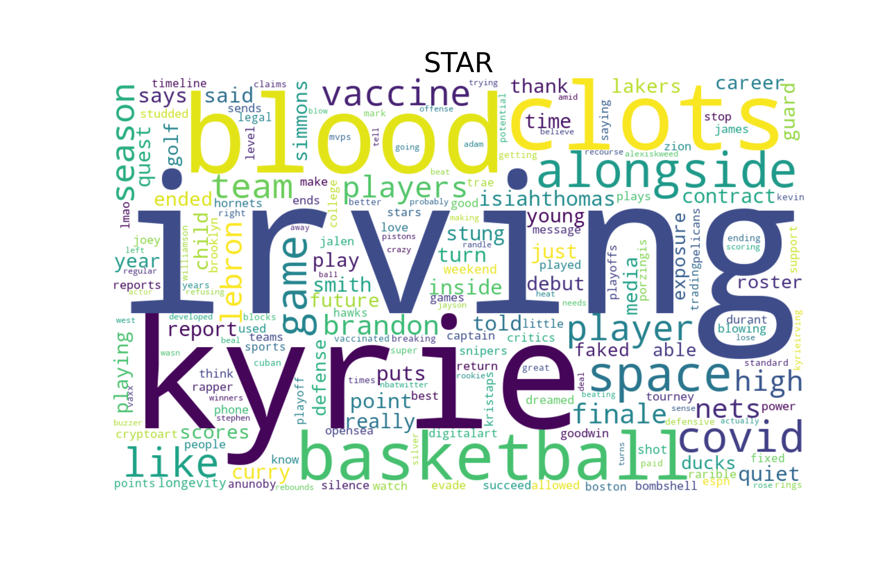 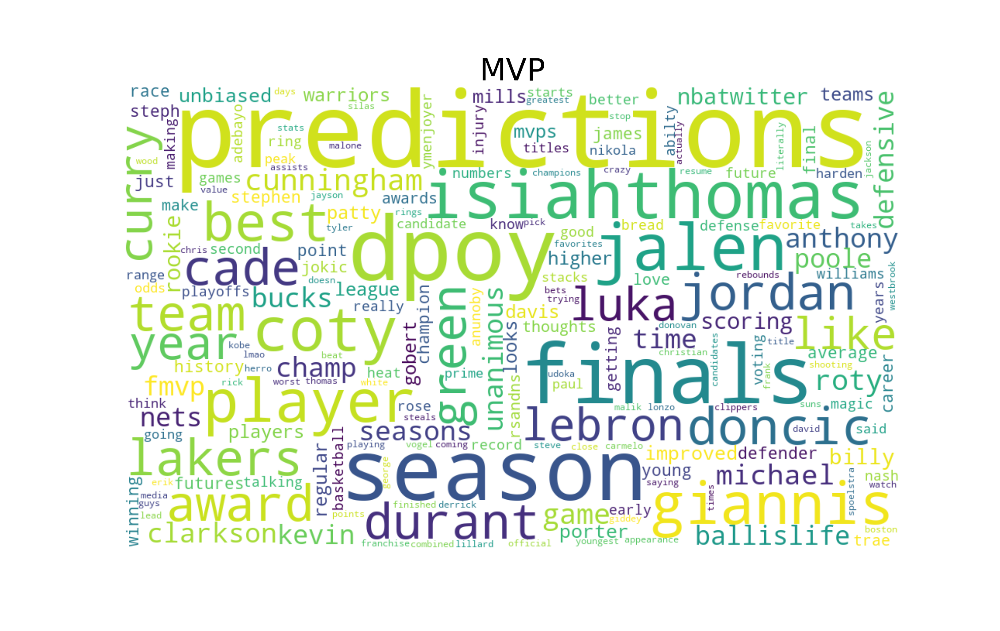 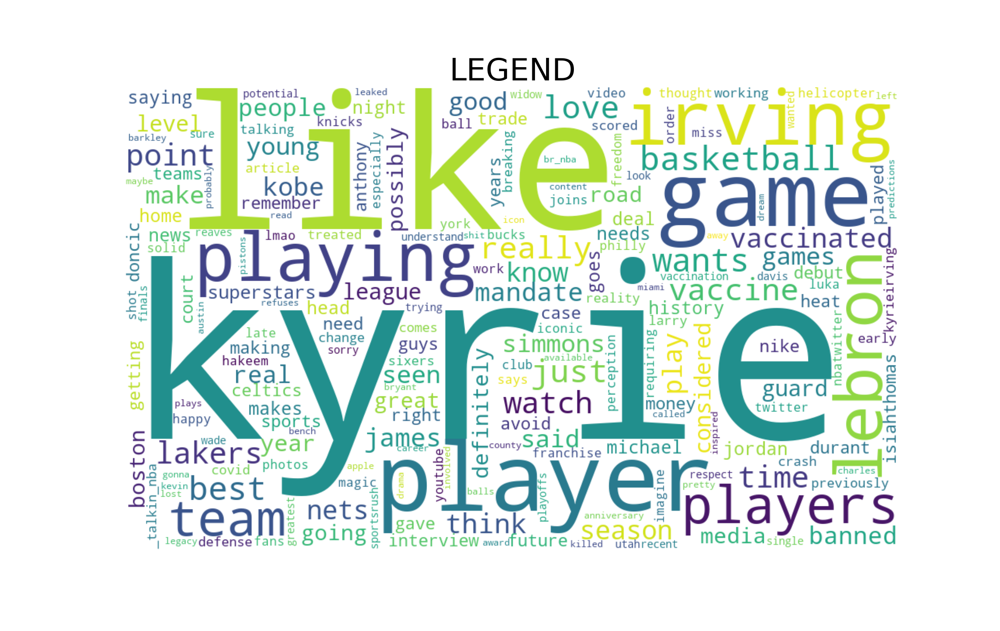Here the differences in the labels become visible. The star label is full of vaccine and covid related issues, specifically involving Kyrie Irving. There are also some names of stars as well. The MVP label is filled with discussion regarding potential picks for the respective honors like rookie Jalen Green and veterans Luka Doncic, LeBron, and others. There are also mentions of other season long award. Lastly, the legend cluster search contains names of legends as well as teams with NBA legends like the Lakers, Celtics, and Jazz. Now onto decision tree analysis.
The first decision tree used gini instead entropy as the criteria used in the splitting function. Additionally,
the minimum amount of samples that can be in a node in order to split it was set at 10, to keep the tree more simple.
Lastly, the ccp_alpha parameter is used and set to .003. This ccp_alpha parameter is sklearn's complexity parameter
which determines the threshold of model improvement that must be met in order to make a node split.
Using these parameters, the following decision tree was made (Decision Tree).
The most important variables in this tree are calculated by looking at the decrease in error resulting from a split using the particular variable.
For this tree the most important variables are shown below:
Some words to note are "finals", "covid", "season", and "dpoy" . Based on the wordclouds, "finals" and "dpoy" are linked to the mvp searches, "covid" and "season" are featured in the star tweets. There are also many names of players featured as important variables which cannot for sure be isolated to any of the searches. Of note, is just how many of the important terms are about winning awards or championships, further indicating that an important feature of stardom is simply winning.
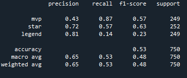The accuracy of this Decision Tree is quite low at around 53% overall. However, the mvp and star searches were the most identifiable (87% and 62% accurate respectively), likely due to the more focused nature of these tweets as opposed to the legend which is the combination of 3 different searches.
For the second decision tree entropy was used instead of gini as the criteria for splitting nodes. The same parameters for min samples split was used. Here, the following decision tree was made (Decison Tree 2). These text decision trees are quite large because of the nature of the Document term matrixes they are based off of. Each row is associated with a frequency count for the given words and there are many variables (words) to choose from and infinite ways to split the nodes with frequency counts. As a result, there is a lot of node splitting and a lot of variables to grow the tree.
The most important words for this decision tree are shown below:
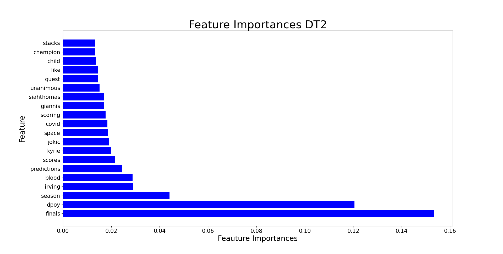Here, the feature importances are similar to those found in the first decision tree. Words like "finals", "dpoy", and "season" are still important but there are more names of individuals then in the other tree, specifically Kyrie Irving. Of note, is the entrance of the word "predictions" (linked to the MVP searches) indicating the importance that projections play into the conversation surrounding the MVP award. Overall, this decision tree is highly similar to the first. Like the first tree, the star and superstar searches were most readily identifiable, and the tree as a whole was decently inaccurate.
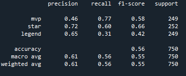For the third decision tree, an attempt was made to create a much simpler decision tree, even if it compromised accuracy (as accuracy was already poor) to see if any feature importances would change in a meaningful way. To create this tree, entropy was used as the criteria, the min split sample was bumped up to 15, and ccp_alpha was set to .006 resulting in the following decision tree (Decision Tree).
The most important words are shown below:
Nothing new was discovered. However, it is worth commenting on the massive importance of the words "finals". "Finals" is important as that is what distinguishes a typical star from those players who are truly special. Stardom and winning championships are absolutely linked. In this case it was used to identify tweets for the MVP search but in theory it is a feature of all the different types of stars.
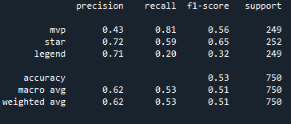The simplicity of this tree sacrificed accuracy leading to a model that was 53% accurate overall. Notably, the mvp and star searches are still more readily identifiable whereas the legend tweets seem to be harder to identify.
The code used to create the wordclouds, train and test sets, and the decision trees and associated plots is linked here.
When using Decision Tree analysis on the record data, the labels were updated to more accurately reflect the data. The same methodology was used as in the clustering process ("Below average" is up to the median, "above average" is median to 75th percentile, "star" is 75th t0 90th percentile, and "superstar" is the top 10% ), however the tiers were updated to reflect the data after it was subsetted for players who played over 15 games to remove those who were injured, and other outliers that would complicate salary prediction. There was an attempt to make the salary bins significantly more specific to include vet minimums and mid level exception salary levels, but the accuracy of the decision tree was simply too low to continue (sub 50%). The code used to update the labels is linked here.
The updated labeled data used for the decision trees is the same largely numerical dataset used in the past analyses. The dataset that has 3707 rows and 26 columns A quick look is below:
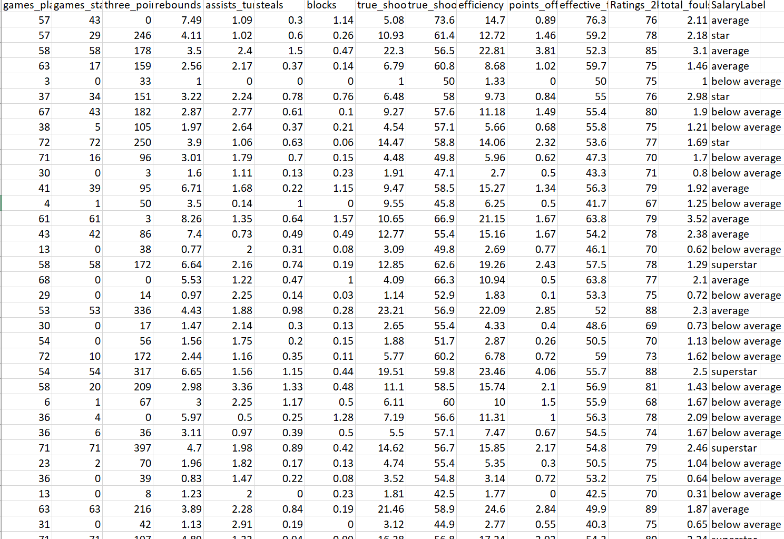To perform the analysis most effectively the columns for name, team, and year were dropped. Additionally, the column with Salary percentage was also dropped as the inclusion of this data would give the decision tree an accuracy of 100% (because it was the variable used to create the categories). After these changes, the data has 3345 rows and 22 columns.
A 75/25 split was used to create the train and test sets. Below are bar graphs of the label breakdowns of the train and test set:
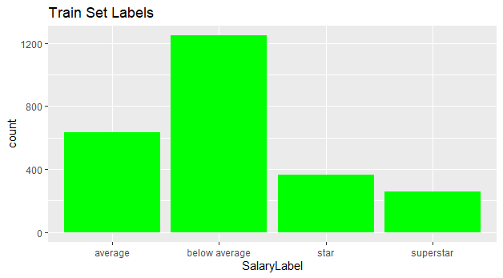 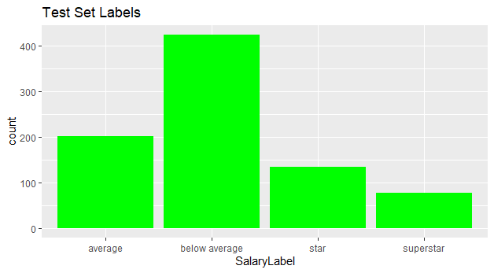In comparison with the dataset wide Salary Labels:
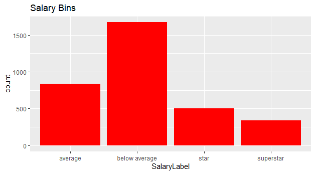The train and test set labels are well balanced and representative of the data as a whole. Ensuring balanced data is very important because an overwhelmingly large class can lead to a highly accurate decision tree that is not insightful in anyway. For instance, a dataset with 900 data points of class 1 and 100 data point of class 2 can have a decision tree that only predicts class 1 and will have 90% accuracy.
The first Decision Tree uses information gain as opposed to gini as its splitting function and uses a complexity parameter of .01. The complexity parameter determines how deep the trees go and how much fitting to the specific data there is. A cp that is too low can lead to overfitting. The complexity parameter can be interpreted as the model improvement necessary to perform a split. Using these parameters the resulting Decision Tree is produced:
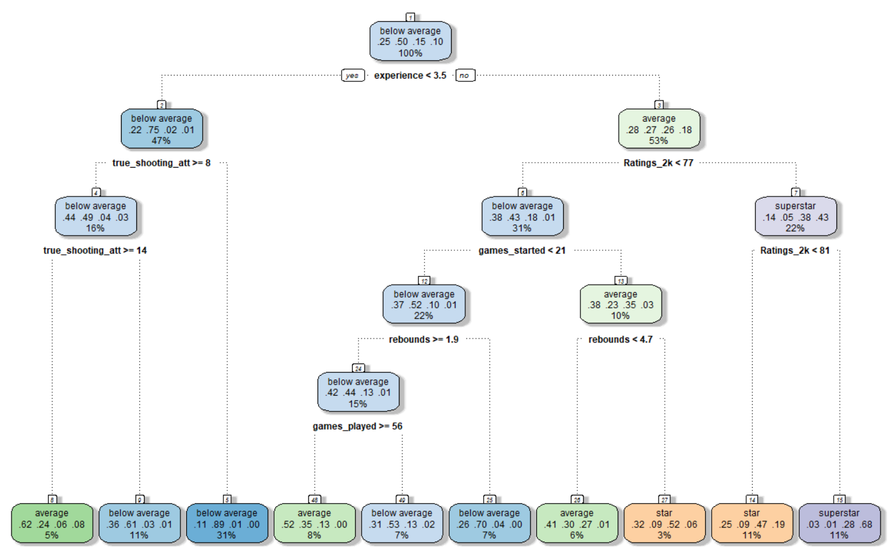The complexity parameter and error plot is shown below:
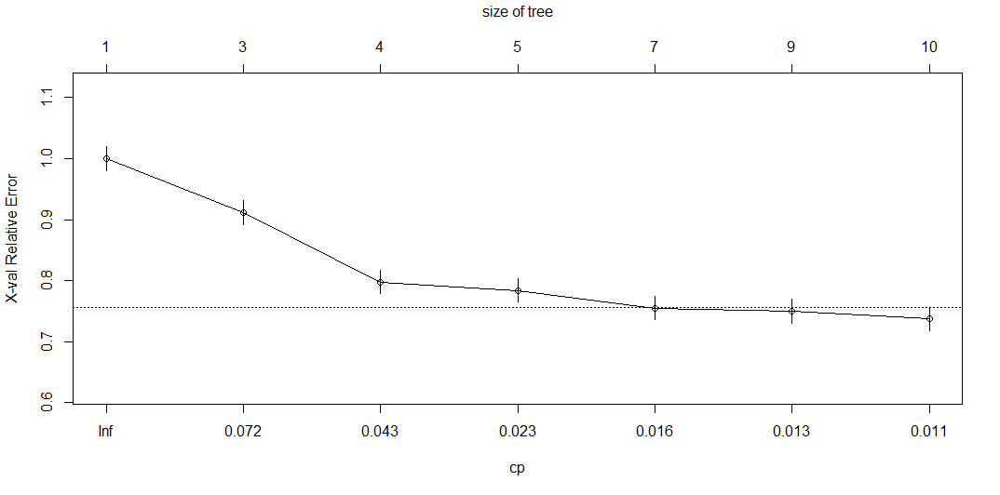Part of the reasoning for choosing a cp of .01 is that the cross validated relative error is minimized with values in this range.
The most important variables in this tree are calculated by looking at the decrease in error resulting from a split using the particular variable. For this tree the most important variables are shown below:
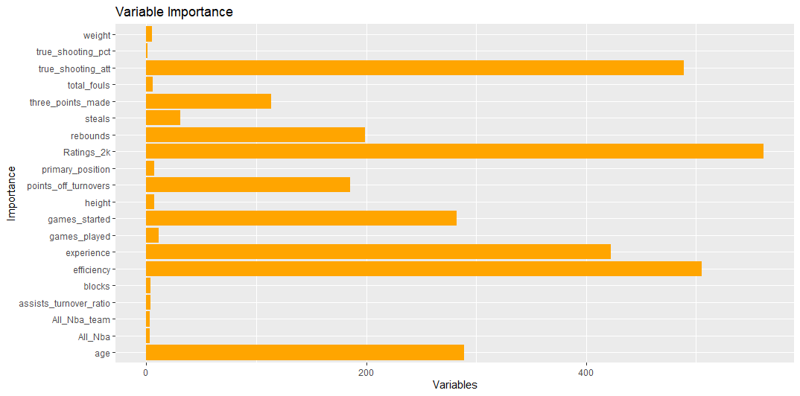Many of the most important variables are the ones highly correlated with salary such as 2k Ratings, efficiency, and true shooting attempts. Age, although not highly correlated with salary is one of the more important variables in this tree which makes intuitive sense (generally older players make more than younger ones because they have improved during their time in the league and were more talented than those who were forced out). The tree itself is 6 levels deep which is moderate but shallower than expected given the low complexity parameter.
This decision tree had nice accuracy of 66.9%. It is particularly accurate for the lowest and highest classes of salary with an 82% and 86% accuracy respectively. The average and star classes were harder to predict but the specificity for both (probability of being right when it classifies a data point as that class) was very high.
The second Decision Tree utilizes the same complexity parameter as the first, but instead of information gain as the splitting function, gini is used. This means that splits will be made based on minimizing gini as opposed to entropy measures.
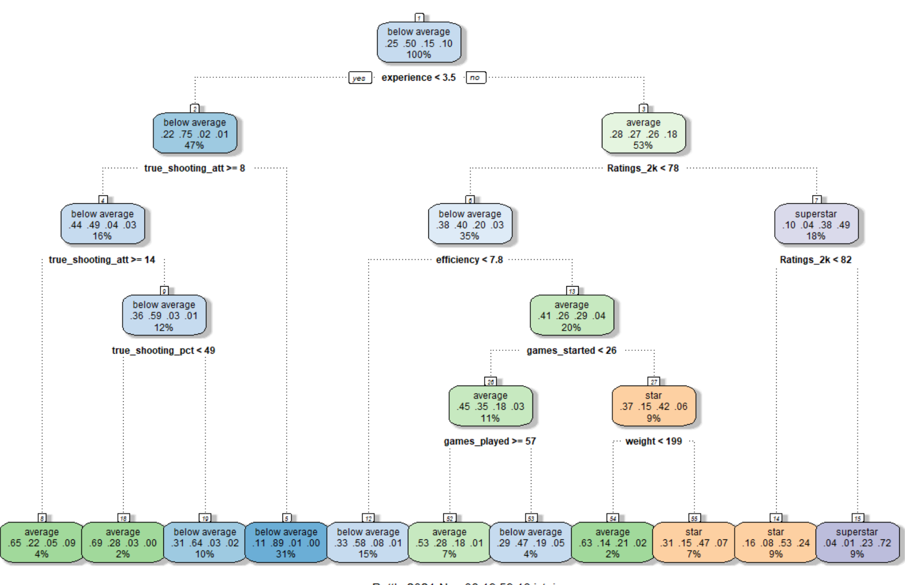Many of the variables in this tree are the same as those in the first decision tree with a few tweaks. Rebounds are not included and variables like true shooting percentage and weight are. Also, different cutoffs are used for many of the variables.
The variable importance for the key variables are also quite similar:
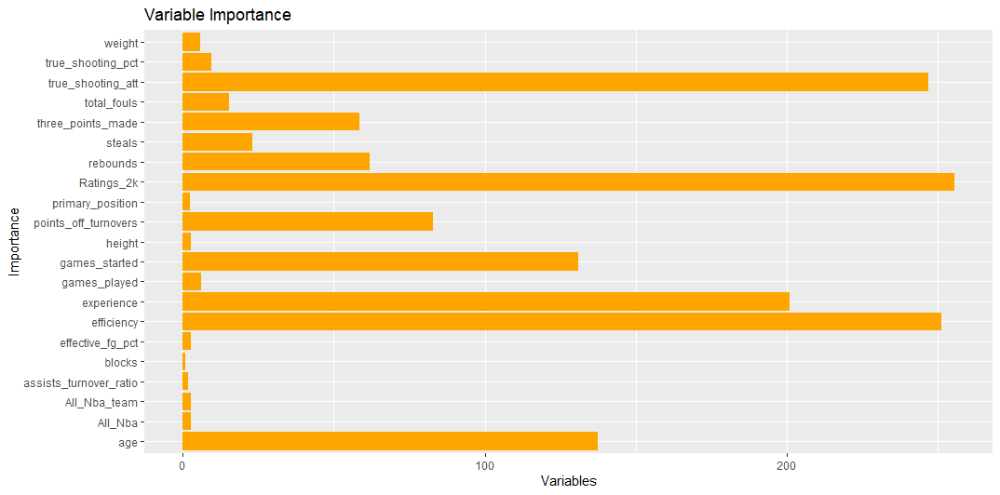The similarity between the first 2 trees is due to the fact that the one area of difference between the two, the splitting function, relies on different metrics used to quantify similar attributes, the purity of the node. The slight differences in these two metrics yields different decision trees, but altering this parameter alone will only change so much
Similar in all the other ways, a vastly different accuracy would be concerning. The confusion matrix for the second decision tree:
This tree has slightly less accuracy coming in at 64.6%. Once again, the bottom and top tiers of salaries were easiest to predict, and perform quite well while the middle tiers are harder to identify, but retain strong specificity like the first decision tree.
For the third decision tree, information gain was chosen for the splitting function. Additionally, simpler decision trees with similar accuracy should always be preferred over a more complex one (Occcam's Razor). Towards this end, the third decision tee used a complexity parameter of .02. Higher cp values had too much cross validated error and too low accuracy. Below is the result:
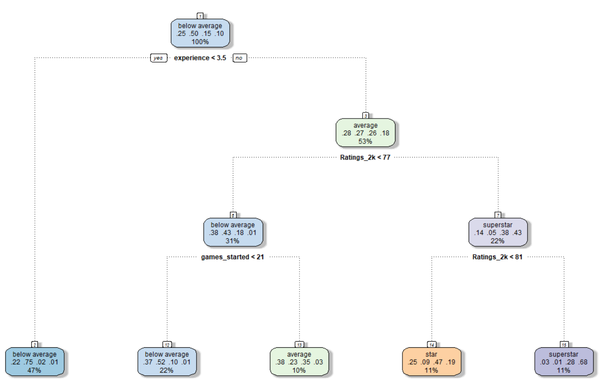This tree is much simpler with only 4 levels and 4 decisions to be made. Only 3 variables are utilized: experience, 2k Ratings, and games started. 2k Ratings has played a large role in all 3 of the decision trees so its inclusion as a variable seems to have been a worthy call.
Looking at variable importance, there are less variables involved and few with minimal importance. All the variables are ones that have decently high correlations with salary.
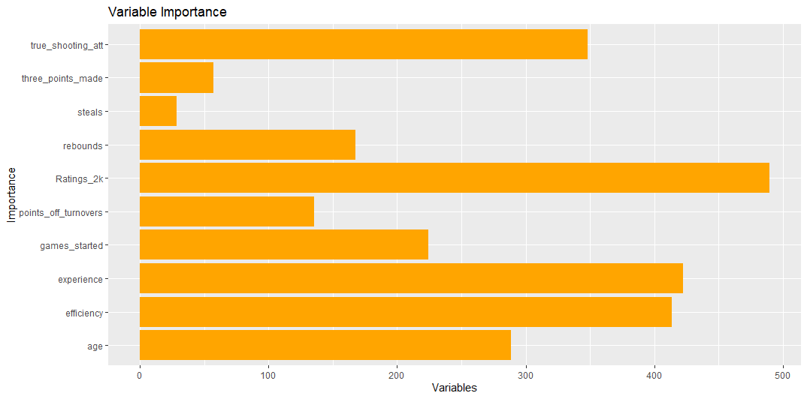Now, taking a look at accuracy for this simpler tree:
Accuracy for this tree is at 65.4% with significantly higher accuracy for the bottom and top tiers, and lower accuracy for the middle tiers. Although slightly less accurate than the first decision tree, the simplicity of this model makes it the preferred one.
The code used to create the train and test sets, and the decision trees and associated plots is linked here.
For the record data, the decision trees identified similar patterns to that found in ARM and Clustering; the tiers straddling each side of the salary distribution are the easiest to identify and predict. Additionally, the key variables are true shooting attempts, 2k Rating, experience, efficiency, and games started. These variables for the most part are highly correlated with salary so it is not surprising that they show up as critical variables in the decision tree analysis. Surprisingly, efficiency stats like shooting percentage, defensive stats, and three point related stats are absent as critical variables. The absence of shooting percentage and three pointers is surprising given the trends in the NBA related to shooting more three pointers, but given the scope of this analysis (since 2013) there is a real possibility that salaries have not adjusted to accurately value players in this new era and/or that salary adjustments lag changes in the game by a few years.
For the text data, the decision trees were relatively inaccurate, but better at identifying the mvp and star tweets. This is likely due to a few factors. First and foremost, these twitter searches are very similar to each other as they all are denoting slightly different aspects of elite NBA players/tiers. The low accuracy of the legend cluster which includes the tweets from allstar, superstar, and legends searches is likely due to the fact that combining them made it hard to identify concrete patterns. The word importances revealed a little more insight. Key words like "finals" and "dpoy" indicate salient aspects of stardom; winning as a team while still shining as an individual. Some trends of note were that MVP and star searches generally involve discussions about players in a given season, unsurprising given the nature of MVP awards and constantly occurring discussions about stardom. Legend talk revolves around particular legends and generally has some talk of awards and championships as well as the qualities of a top tier star/legend, as well as teams who have consistently produced legends over the years.